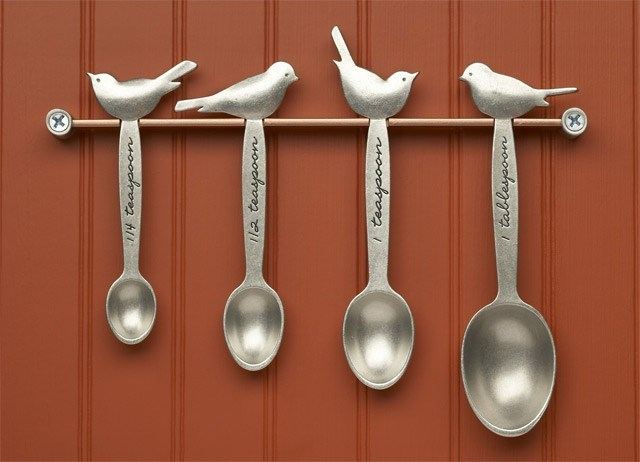
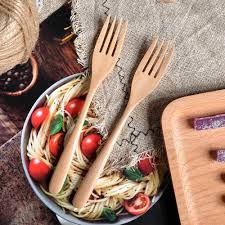
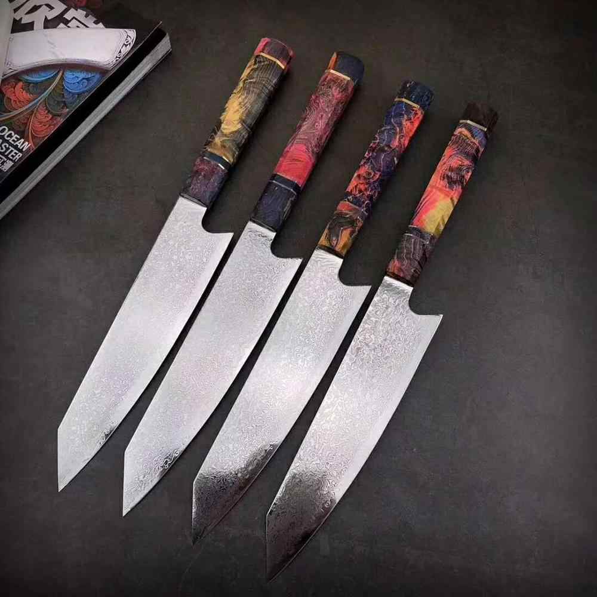
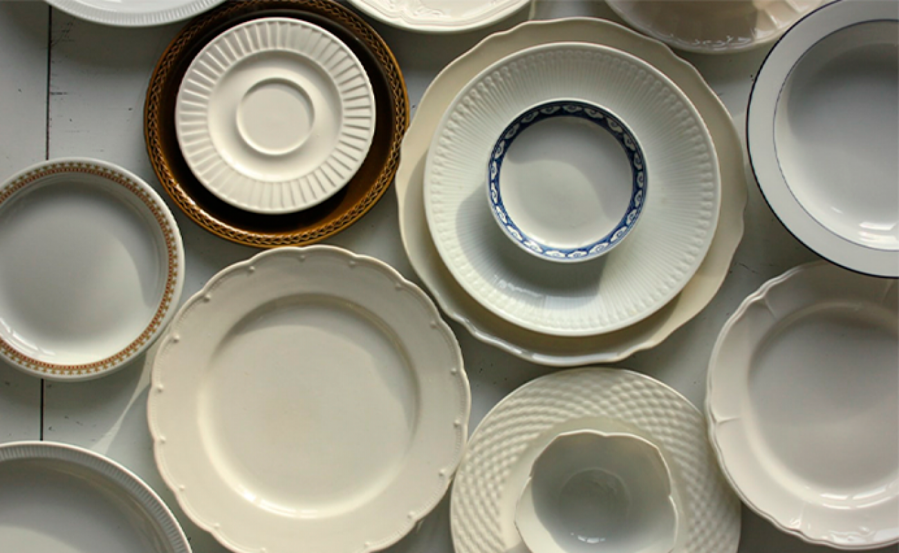
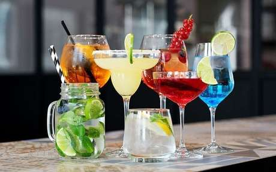

Bem vindo ao mundo dos talheres
Nesse site vamos te levar a conhecer um pouco mais dos tradicionais talheres de mesa e além disso você irá ver também um pouco sobre o mundo dos copos e dos pratos.
Aprenda mais sobre colheres :
As colheres objetos tão importantes no nosso dia a dia,presentes nas mais diversas refeições e ocasiões,esse utensílio possui grande importância na nossa sociedade mas normalmente o ignoramos, no mundo dos talheres você irá aprender um pouco mais sobre elas.
Aprenda mais sobre garfos :
Os garfos são utensílios de cozinha tão importante quanto as colheres,apesar de estarem tão presentes em nossas vidas, não lhe damos a devida importância.
Você sabia que os garfos já foram perseguidos pela igreja? Sabe a diferença entre um garfo de peixe e um para ostras? no mundo dos talheres você irá ver tudo isso.
Aprenda mais sobre facas :
Essas acompanham a humanidade desde a época pré-histórica e também considerado um dos mais antigos talheres de mesa existente, vale lembrar que existem diversos tipos de faca, cada uma voltada a uma atividade específica, no mundo dos talheres você irá ver facas usadas no ambiente culinário.
Aprenda mais sobre pratos :
A base para nossas refeições, os pratos são objetos tão importantes quanto as colheres,garfos ou as facas,no mundo dos talheres você irá ver diversos tipos de pratos desde um simples pires até um prato quadrado.
Aprenda mais sobre copos :
Uma boa refeição fica sempre melhor acompanhada de uma boa bebida e é nessa hora que os copos entram em ação no nosso site você irá conhecer 8 tipos de copos a sua origem e a utilidade de cada um deles.